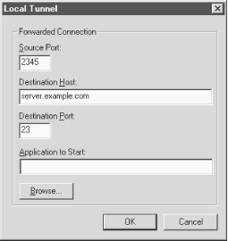

16.5. Forwarding
F-Secure SSH Client supports forwarding (
Chapter 9, "Port Forwarding and X Forwarding"), in which another network connection can be
passed through SSH to encrypt it. It is also called tunneling because
the SSH connection provides a secure "tunnel" through
which another connection may pass. Both TCP port forwarding (local
and remote) and X forwarding are supported.
16.5.1. Port Forwarding
Each F-Secure configuration you
create may have different ports forwarded. To set up forwarding to a
particular remote host, disconnect from that host (if you're
connected), open the Properties window, and notice the Tunneling
category. Select Local Tunneling to set up local forwarding (see
Figure 16-2), or Remote Tunneling for remote
forwarding, respectively. [
Section 9.2.3, "Comparing Local and Remote PortForwarding"] Either way,
you are prompted for similar information:
- Source Port:
- The local port number
- Destination Host:
- The remote hostname
- Destination Port:
- The remote port number
- Application to Start:
- An external application to be launched when this port is forwarded

Figure 16-2. F-Secure SSH Client local port forwarding options
For example, to tunnel a
telnet connection (TCP
port 23) through SSH to connect to
server.example.com, you can specify:
Source port: 8500 (any random port number)
Destination Host: server.example.com
Destination Port: 23
Application to Start: c:\windows\telnet.exe
Once you've made your choices, reopen the SSH connection, and
the ports will be forwarded for the duration of your connection.
Note that F-Secure SSH Client forbids remote connections to locally
forwarded ports. This security feature is analogous to specifying
"GatewayPorts no". [
Section 9.2.1.1, "Local forwarding and GatewayPorts"]
16.5.2. X Forwarding
The X Window System is the most
popular windowing software for Unix machines. If you want to run
remote X clients that open windows on your PC, you need:
- A remote host, running an SSH server, that has X client programs
available
- An X server running on your PC under Windows, such as
Hummingbird's eXceed
SSH makes your X connection secure by a process called X forwarding.
[
Section 9.3, "X Forwarding"] Turning on X forwarding is trivial in
F-Secure SSH Client: open the Properties window, select Tunneling,
and put a checkmark in the box Enable X11 Tunneling. You may also
select the X display number, which you also may change during your
SSH session.
To secure an X connection by forwarding it through SSH, first run
F-Secure SSH Client and establish a secure terminal connection to the
SSH server machine. Then run your PC's X server, disabling its
login features such as XDM. Now simply invoke X clients on the server
machine, and their windows will open on your local X
display.
 |  |  |
| 16.4. Advanced Client Use |  | 16.6. Troubleshooting |